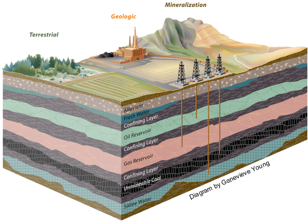
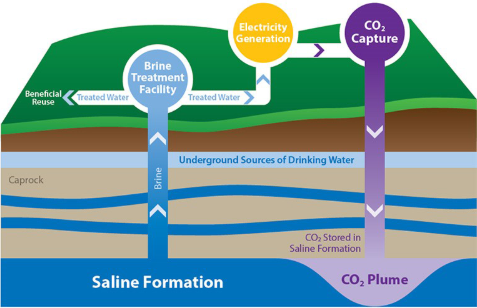

Use the dropdowns below to learn more about carbon sequestration and why it is necessary.
Click on the questions below to learn about geologic carbon dioxide capture and storage.
Electricity production generates the largest share of CO2. The pie chart below shows the breakdown of the major emitters. Source: NETL, NatCarb
Carbon capture and sequestration (CCS) begins with the capture of CO2 at its source, such as a coal fired power plant, and continues with the transportation of the CO2 to a location where it can be sequestered or stored safely away from the earth's atmosphere and oceans.
Three types of CO2 sequestration are currently under way: terrestrial sequestration, geologic sequestration, and mineralization. Geologic sequestration is storage of CO2 within geological formations under the earth's surface. Oil, gas, unmineable coal and saline water reservoirs are best suited for CO2 sequestration.

Source: University of Utah
In South Carolina, we are focused on geologic sequestration in deep saline formations.
Sequestration of CO2 in deep saline formations does not produce value-added by-products, but it has other advantages. First, the estimated carbon storage capacity of saline formations in the United States is large, making them a viable long-term solution. It has been estimated that deep saline formations in the United States could potentially store up to 500 billion tonnes of CO2.
Second, most existing large CO2 point sources are within easy access to a saline formation injection point, and therefore sequestration in saline formations is compatible with a strategy of transforming large portions of the existing U.S. energy and industrial assets to near-zero carbon emissions via low-cost carbon sequestration retrofits.
Assuring the environmental acceptability and safety of CO2 storage in saline formations is a key component of this program element. Determining that CO2 will not escape from formations and either migrate up to the earth's surface or contaminate drinking water supplies is a key aspect of sequestration research. Although much work is needed to better understand and characterize sequestration of CO2 in deep saline formations, a significant baseline of information and experience exists. For example, as part of enhanced oil recovery operations, the oil industry routinely injects brines from the recovered oil into saline reservoirs. Further, the U.S. Environmental Protection Agency (EPA) has permitted some hazardous waste disposal sites to inject liquid wastes into deep saline formations.
Saline formation information was taken from the DOE website.
Geologic sequestration is the underground storage of CO2 in existing geologic formations. The following six types of repositories provide the best opportunities for permenant sequestration:
1. oil reserviors
2. natural gas deposits
3. unminealbe coal seams
4. deep saline formations
5. shale rich in oil or gas
6. basalt formations.
All sequestration techniques involve extensive monitoring, mitigation and verification (MMV) in addition to continuous risk assesment of the site. Effective application of proper MMV procedures will ensure the saftey of carbon sequestration techniques with regards to human and environmental health.
The above information was taken from the University of Utah Carbon Science & Engineering Research Group site.
Watch this video for more information:
The U.S. Department of Energy has a carbon storage FAQs page that answers questions related to what carbon capture and storage is, how and where CO2 is stored underground, and where it is happening today. 
The Midwest Geological Sequestration Consortium (MGSC) completed a Deep Saline Storage project called the Illinois Basin — Decatur Project.
The MGSC partnered with the Archer Daniels Midland Company (ADM) and Schlumberger Carbon Services to conduct a large-scale multiyear deployment of geological sequestration of 1 million metric tons (1.1 million U.S. tons) of CO2 over three years. This large-scale injection occured at the ADM plant site in Decatur, Illinois, into the Mt. Simon Sandstone saline formation, one of the most significant carbon storage resources in the United States, at a depth of approximately 7,000 feet (2,135 meters). A comprehensive Measurement, Verification, and Accounting (MVA) program, including shallow groundwater, soil gas, resistivity, and atmospheric monitoring was started in 2009, continued through the drilling of four regulatory shallow groundwater monitoring wells in mid-2010, through operational injection from 2011 to 2014, and concluded in 2017- three years after injection was completed. Drilling of the 7,230 foot (2,200 meter) well commenced in February 2009 and was completed in May 2009. A groundbreaking event hosted in April 2009 brought more than 200 visitors to the site. A second geophysical well was drilled and completed in September 2009. This 3,200 foot (975 meter) well had geophones cemented in place for enhanced data recovery during repeat walk-away vertical seismic profiles. A three-dimensional seismic data baseline survey was completed in January 2010. A deep in-zone monitoring well was completed in April 2011. A compression/dehydration facility and a pipeline to carry CO2 from the ethanol production facility to the wellhead were completed shortly after. Injection of CO2 began on November 17, 2011 and was completed successfully on November 26, 2014. 999,215 Million Metric Tons of CO2 were successfully injected and contained. For more information on the Decator site, visit: http://sequestration.org/.
The Norwegian oil company, Statoil, is injecting approximately one million tonnes per year of recovered CO2 into the Utsira Sand, a saline formation under the sea associated with the Sleipner West Heimdel gas reservoir. The amount being sequestered is equivalent to the output of a 150-megawatt coal-fired power plant.
Sleipner Area Description
Sleipner Partnership Releases CO2 Storage Data
CO2 Storage Data Consortium - Project Page
For more information about the South Carolina Carbon Sequestration, contact Scott Howard at howards@dnr.sc.gov or Bill Clendenin at clendeninb@dnr.sc.gov.
{kind=link}
{kind=link}
{kind=link}